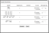
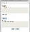
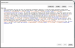
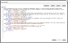
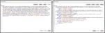
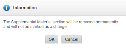

{kind=link}
{kind=link}
{kind=link}
{kind=link}
{kind=link}


The Production Editor uses the Power Tools commands to insert tags, edit elements, renumber equations, and reorder affiliations and abbreviations.
Use this command to tag elements within the article XML to facilitate online linking. Email addresses, database entries, glossaries, inline supplements, and supplemental data are examples.
| Tagging Type | Values |
|---|---|
| Email address | None |
| Database link | Select a database from the Database drop-down. Enter an Accession Number. |
| Glossary link | Type the Term. Select an Id from the Select Term ID drop-down. |
| Simple inline-supplement | Select a Mime Type, either application or video. Select a Mime Subtype. Type the File Name. |
| Supplemental data link | None |
When complete, click Tag Item. ArticleExpress displays the result in the Result Text box. 
Use this command to view and work with the complete XML received from the peer-review system. 
The Element EditorA tool for Production Editors to view and edit the XML. works with the selected text, such as a paragraph. If your cursor is within an element, ArticleExpress selects the entire element and displays it in the Element Editor. For example, if the cursor is within the Abstract and you select the Element Editor command, ArticleExpress displays only the Abstract section's XML.
Note: If you aren't familiar with XML and the elements in your document, your edits can cause your document to fail validation.
The following commands are available:


Note: Text edits such as deletions or additions will be saved without color highlighting as seen with other edits.
Use this command to renumber equations that are out of numeric order. For information on adding equations, see the Equations topic.
ArticleExpress may ask you to run File CleanupA process run by the Production Editor to prepare the edited article for downstream processing.. Click Process>File Cleanup and follow the prompts.

Use this command to reorder the affiliations that are out of order due to additions, deletions, or editing changes. For information on adding affiliations, see Affiliations in the Footnotes topic.
ArticleExpress may ask you to run File Cleanup. Click Process>File Cleanup and follow the prompts.

Use this command to reorder the abbreviations in alphabetic order. For information on adding abbreviations, see Abbreviations in the Footnotes topic.
ArticleExpress may ask you to run File Cleanup. Click Process>File Cleanup and follow the prompts.
Use this command to permanently remove all supplemental data from your article, if it exists. This is not marked as a change.

powertools.htm | Copyright © 2015 Dartmouth Journal Services All Rights Reserved.
{kind=link}
{kind=link}